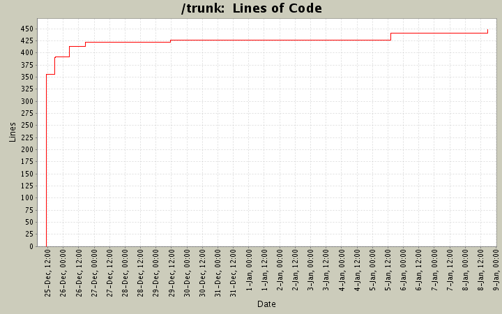

[root]
 bin
(4 files, 504 lines)
bin
(4 files, 504 lines)
 docs
(10 files, 2934 lines)
docs
(10 files, 2934 lines)
 lib
(1 files, 133 lines)
lib
(1 files, 133 lines)
 maruku
(11 files, 1388 lines)
maruku
(11 files, 1388 lines)
 attic
(1 files, 462 lines)
attic
(1 files, 462 lines)
 ext
(1 files, 10 lines)
ext
(1 files, 10 lines)
 math
(4 files, 236 lines)
math
(4 files, 236 lines)
 mathml_engines
(3 files, 89 lines)
mathml_engines
(3 files, 89 lines)
 input
(9 files, 2525 lines)
input
(9 files, 2525 lines)
 extensions
(0 files, 0 lines)
extensions
(0 files, 0 lines)
 output
(6 files, 1875 lines)
output
(6 files, 1875 lines)
 tests
(3 files, 577 lines)
tests
(3 files, 577 lines)
 usage
(1 files, 33 lines)
usage
(1 files, 33 lines)
 miscs
(2 files, 32 lines)
miscs
(2 files, 32 lines)
 rdoc
(1 files, 70 lines)
rdoc
(1 files, 70 lines)
 tests
(2 files, 11 lines)
tests
(2 files, 11 lines)
 MarkdownTest_1.0
(1 files, 157 lines)
MarkdownTest_1.0
(1 files, 157 lines)
 Tests
(57 files, 5628 lines)
Tests
(57 files, 5628 lines)
 bugs
(2 files, 20 lines)
bugs
(2 files, 20 lines)
 math
(6 files, 166 lines)
math
(6 files, 166 lines)
 others
(59 files, 2436 lines)
others
(59 files, 2436 lines)
 unittest
(78 files, 5681 lines)
unittest
(78 files, 5681 lines)
 attributes
(10 files, 326 lines)
attributes
(10 files, 326 lines)
 encoding
(4 files, 99 lines)
encoding
(4 files, 99 lines)
 math
(8 files, 468 lines)
math
(8 files, 468 lines)
 notyet
(8 files, 482 lines)
notyet
(8 files, 482 lines)
 paragraph_rules
(4 files, 133 lines)
paragraph_rules
(4 files, 133 lines)
 recover
(2 files, 40 lines)
recover
(2 files, 40 lines)
 references
(4 files, 145 lines)
references
(4 files, 145 lines)
 utf8-files
(6 files, 1425 lines)
utf8-files
(6 files, 1425 lines)

| Author | Changes | Lines of Code | Lines per Change |
|---|---|---|---|
| andrea | 26 (100.0%) | 482 (100.0%) | 18.5 |
0.4.1
7 lines of code changed in:
18 lines of code changed in:
0.3.0
0 lines of code changed in:
0.2.13
7 lines of code changed in:
Support for shortcut: .c => class: c, #i => id: i
5 lines of code changed in:
Documentazione, tag 0.2.6
1 lines of code changed in:
- Support for auto-generated table of contents
14 lines of code changed in:
- Added rakefile release
- PDF: margins much smaller
24 lines of code changed in:
0.2.3
1 lines of code changed in:
Fixed a little bug; deleted debug message
3 lines of code changed in:
Added rakefile; added ignore property
12 lines of code changed in:
Added Rakefile
28 lines of code changed in:
Fixed bug with urls or emails at the beginning of the line
1 lines of code changed in:
6 lines of code changed in:
Importing code into repository
355 lines of code changed in: